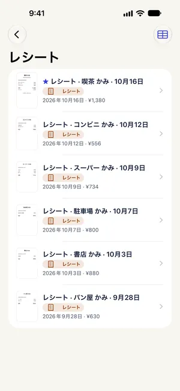

確定申告のレシート・領収書をスキャンして整理する方法
最終更新 2026-10-22
確定申告の時期になると、財布や引き出しに散らばったレシート探しから始まりがちです。Paperkeepはスキャンしたレシートを「レシート」に分類し、日付と合計を読み取って一覧に表示するので、1枚ずつ開かなくても見分けられます。撮る・分ける・探すの3つに料金はかかりません。
まずは iOS の標準機能でやる方法
- 「メモ」Appで新規メモを作り、添付ボタン（カメラまたはクリップの形）から「書類をスキャン」を選びます。
- 白いレシートは、濃い色の下敷きやノートの表紙の上だと輪郭がはっきり写ります。何枚でも続けて撮れるので、撮り終えたら右下の「保存」を。
- メモのタイトルを「2026 経費」などにしておけば、メモの検索で探せます。
- 日付や合計は自動では取り出されないので、金額の集計は手作業になります。
Paperkeep でやる方法
- 「スキャン」をタップしてレシートを1枚撮ります。日付と合計を1枚ずつ読み取れるよう、1回のスキャンにつき1枚で「保存」しましょう。
- 「新規スキャン」画面で「補正」フィルタを選ぶと、薄い感熱紙の文字が濃くなり、そのまま「保存」で書類になります。
- 文字を読み終えると種類が「レシート」になり、「日付」と「合計」が表示されます。違っていたら書類画面の「種類」で直せます。
- 最初の「書類」画面で「スマートフォルダ」→「レシート」を開くと、すべてのレシートが日付と金額付きで並びます。
- 店名や金額で探したいときは検索欄に入力します。レシートに印字された文字まで検索できます。


この書類ならではのコツ
- 感熱紙のレシートは数か月で文字が薄くなります。もらったその日にスキャンするのが確実です。
- Siriに「Paperkeepでレシートをスキャン」と話しかけるとスキャナが開き、結果がレシートとして整理されます。ロック画面のウィジェットやコントロールセンターの「書類をスキャン」からもすぐ開けます。
- 紙の原本を捨ててデータだけで保存するには、電子帳簿保存法の「スキャナ保存」の要件を満たす必要があります。Paperkeepのスキャンは控えと整理用と考え、原本の扱いは税務署や税理士に確認しましょう。
- 帳簿や領収書の保存期間は、書類や申告の種類によって5年または7年です。
まもなく App Store で公開します。